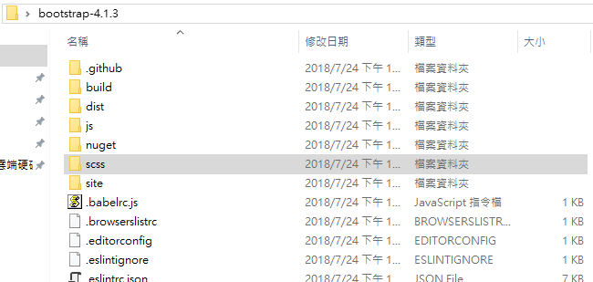
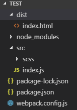
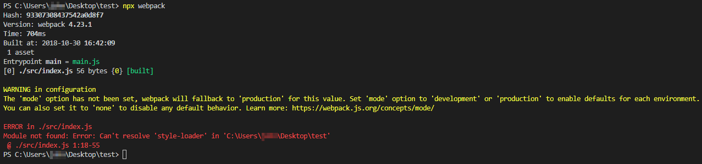
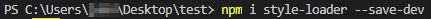
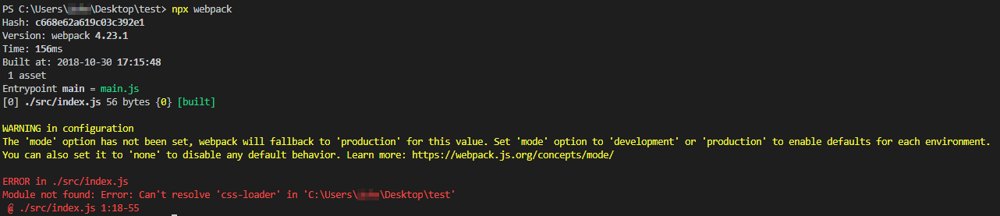
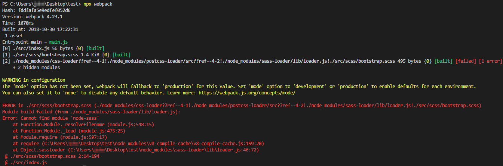
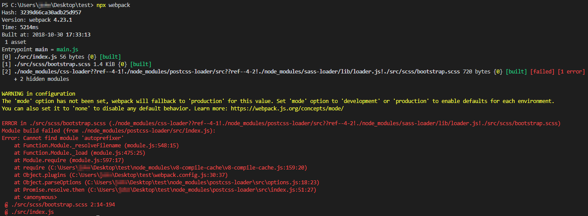
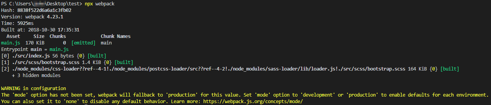

我知道可以利用 npm 來安裝 Bootstrap 所需的相關套件，
不過，這次我只想利用 webpack 來幫我對 bootstrap 的 scss 檔作自動轉譯成 css 並附加在網頁上。
首先把 bootstrap Source files 下載下來，我們只取 scss 資料夾裡面的內容就好

準備的資料結構如下

index.html 內容如下
<!doctype html> <html lang="en"> <head> <!-- Required meta tags --> <meta charset="utf-8"> <meta name="viewport" content="width=device-width, initial-scale=1, shrink-to-fit=no"> <!-- Bootstrap CSS --> <script src="main.js"></script> <title>Hello, world!</title> </head> <body> <h1>Hello, world!</h1> <!-- Optional JavaScript --> <!-- jQuery first, then Popper.js, then Bootstrap JS --> <script src="https://code.jquery.com/jquery-3.3.1.slim.min.js" integrity="sha384-q8i/X+965DzO0rT7abK41JStQIAqVgRVzpbzo5smXKp4YfRvH+8abtTE1Pi6jizo" crossorigin="anonymous"></script> <script src="https://cdnjs.cloudflare.com/ajax/libs/popper.js/1.14.3/umd/popper.min.js" integrity="sha384-ZMP7rVo3mIykV+2+9J3UJ46jBk0WLaUAdn689aCwoqbBJiSnjAK/l8WvCWPIPm49" crossorigin="anonymous"></script> <script src="https://stackpath.bootstrapcdn.com/bootstrap/4.1.3/js/bootstrap.min.js" integrity="sha384-ChfqqxuZUCnJSK3+MXmPNIyE6ZbWh2IMqE241rYiqJxyMiZ6OW/JmZQ5stwEULTy" crossorigin="anonymous"></script> </body> </html>
index.js 內容如下
const bootstrap = require("../src/scss/bootstrap.scss");
webpack.config.js 內容如下
const path = require('path'); module.exports = { entry: './src/index.js', output: { filename: 'main.js', path: path.resolve(__dirname, 'dist') }, module: { rules: [ { test: /\.scss$/, use: [ { loader: 'style-loader' }, { loader: 'css-loader', options: { url: false, // sourceMap: true } }, { loader: 'postcss-loader', // Run post css actions options: { plugins: function () { // post css plugins, can be exported to postcss.config.js return [ require('precss'), require('autoprefixer') ]; } } }, { loader: "sass-loader" } ] } ] }, };
按照 Bootstrap 網官指示，用到的 loader 有 style-loader、css-loader、postcss-loader(註1)、sass-loader，
而 postcss-loader 裡，還會用到 precss(註2)、Autoprefixer(註3) 套件。
(註1)、postcss-loader 底下可掛載好幾個套件，所以他算是一個套件集合體。
(註2)、precss是一個預處理CSS的插件包，集成了很多postcss插件的功能，比如嵌套，變量，繼承，混合，循環，判斷，
可以像使用Stylus，Sass或LESS一樣使用PreCSS。
(註3)、Autoprefixer 是對 css 檔額外加上 vendor prefixes，用來增加對瀏覽器版本的支援數。
接下來打入 npx webpack 指令嘗試編譯看看

發現 webpack.config.js 會使用到的 style-loader 還沒有安裝，所以就來裝上他吧，指令為
$ npm i style-loader --save-dev

再編譯一次，此時出 css-loader 還沒有安裝，所以請安裝
$ npm i css-loader --save-dev

再編譯一次，此時出 postcss-loader 還沒有安裝，所以請安裝
$ npm i postcss-loader --save-dev
再編譯一次，此時出 sass-loader 還沒有安裝，所以請安裝
$ npm i sass-loader --save-dev
再編譯一次，此時出 sass-loader 還沒有安裝，所以請安裝
$ npm i sass-loader --save-dev
再編譯一次，此時出 node-sass 還沒有安裝，所以請安裝
$ npm i node-sass --save-dev

再編譯一次，此時出 precss 還沒有安裝，所以請安裝
$ npm i precss --save-dev
再編譯一次，此時出 autoprefixer 還沒有安裝，所以請安裝
$ npm i autoprefixer --save-dev

國父革命第十次才成功，我比他幸運，我編譯到第九次就成功了。

參考資料：
Learn how to include Bootstrap in your project using Webpack 3.